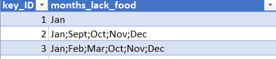
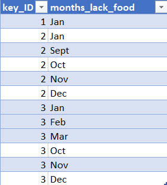
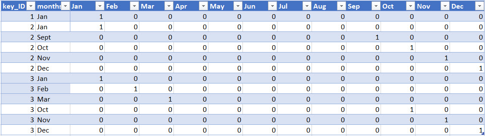

dplyr and tidyrdplyr is a package for making tabular data manipulation easier by using a limited set of functions that can be combined to extract and summarize insights from your data. It pairs nicely with tidyr which enables you to swiftly convert between different data formats (long vs. wide) for plotting and analysis.
Similarly to readr, dplyr and tidyr are also part of the tidyverse. These packages were loaded in R's memory when we called library(tidyverse) earlier.
An R package is a complete unit for sharing code with others. Each R package contains the code for a set of R functions, the documentation (or description) for each of the functions, as well as a practice dataset to learn the functions on.
Generally, each R package is built with a specific task in mind. For instance, the package dplyr provides easy tools for the most common data manipulation tasks. It is built to work directly with data frames, with many common tasks optimized by being written in a compiled language (C++) (not all R packages are written in R!).
The package tidyr addresses the common problem of wanting to reshape your data for plotting and use by different R functions. Sometimes we want data sets where we have one row per measurement. Sometimes we want a data frame where each measurement type has its own column, and rows are instead more aggregated groups. Moving back and forth between these formats is nontrivial, and tidyr gives you tools for this and more sophisticated data manipulation.
But there are also packages available for a wide range of tasks including building plots (ggplot2, which we'll see later), or performing statistical analysis on your data set. Many packages such as these are housed on, and downloadable from, the Comprehensive R Archive Network (CRAN) using install.packages. This function makes the package accessible by your R installation with the command library(), as you did with tidyverse earlier.
To easily access the documentation for a package within R or RStudio, use help(package = "package_name").
To learn more about dplyr and tidyr after the workshop, you may want to check out this handy data transformation with dplyr cheatsheet and this one about tidyr.
A wide variety of such cheatsheets are available from the RStudio Help menu item.
dplyr and tidyrTo make sure, everyone will use the same dataset for this lesson, we'll read again the SAFI dataset that we downloaded earlier.
## load the tidyverse library(tidyverse) interviews <- read_csv("data/SAFI_clean.csv", na = "NULL") ## inspect the data interviews ## preview the data # View(interviews)
We're going to learn some of the most common dplyr functions:
select(): subset columnsfilter(): subset rows on conditionsmutate(): create new columns by using information from other columnsgroup_by() and summarize(): create summary statistics on grouped dataarrange(): sort resultscount(): count discrete valuesTo select columns of a
data frame, we use select(). The first argument to this function is the data frame (interviews), and the subsequent arguments are the columns to show. The underlying data frame content is not affected by this process.
select(interviews, village, no_membrs, years_liv)
To choose rows based on a specific criteria, use filter():
filter(interviews, village == "God")
# A tibble: 43 x 14
key_ID village interview_date no_membrs years_liv respondent_wall…
<dbl> <chr> <dttm> <dbl> <dbl> <chr>
1 1 God 2016-11-17 00:00:00 3 4 muddaub
2 1 God 2016-11-17 00:00:00 7 9 muddaub
3 3 God 2016-11-17 00:00:00 10 15 burntbricks
4 4 God 2016-11-17 00:00:00 7 6 burntbricks
5 5 God 2016-11-17 00:00:00 7 40 burntbricks
6 6 God 2016-11-17 00:00:00 3 3 muddaub
7 7 God 2016-11-17 00:00:00 6 38 muddaub
8 11 God 2016-11-21 00:00:00 6 20 sunbricks
9 12 God 2016-11-21 00:00:00 7 20 burntbricks
10 13 God 2016-11-21 00:00:00 6 8 burntbricks
# … with 33 more rows, and 8 more variables: rooms <dbl>,
# memb_assoc <chr>, affect_conflicts <chr>, liv_count <dbl>,
# items_owned <chr>, no_meals <dbl>, months_lack_food <chr>,
# instanceID <chr>
What if you want to select and filter at the same time? There are three ways to do this: use intermediate steps, nested functions, or pipes.
With intermediate steps, you create a temporary data frame and use that as input to the next function, like this:
interviews2 <- filter(interviews, village == "God") interviews_god <- select(interviews2, no_membrs, years_liv)
This is readable, but can clutter up your workspace with lots of objects that you have to name individually. With multiple steps, that can be hard to keep track of.
You can also nest functions (i.e. one function inside of another), like this:
interviews_god <- select(filter(interviews, village == "God"), no_membrs, years_liv)
This is handy, but can be difficult to read if too many functions are nested, as R evaluates the expression from the inside out (in this case, filtering, then selecting).
The last option, pipes, are a recent addition to R. Pipes let you take the output of one function and send it directly to the next, which is useful when you need to do many things to the same dataset. Pipes in R look like %>% and are made available via the magrittr package, installed automatically with dplyr.
If you use RStudio on a PC, you can type the pipe with Ctrl+Shift+M
If you use a Mac the sequence is Cmd + Shift + M
interviews %>% filter(village == "God") %>% select(no_membrs, years_liv)
# A tibble: 43 x 2
no_membrs years_liv
<dbl> <dbl>
1 3 4
2 7 9
3 10 15
4 7 6
5 7 40
6 3 3
7 6 38
8 6 20
9 7 20
10 6 8
# … with 33 more rows
In the above code, we use the pipe to send the interviews data frame first through filter() to keep rows where village is "God", then through select() to keep only the no_membrs and years_liv columns. Since %>% takes the object on its left and passes it as the first argument to the function on its right, we don't need to explicitly include the data frame as an argument to the filter() and select() functions any more.
Some may find it helpful to read the pipe like the word "then". For instance, in the above example, we take the data frame interviews, then we filter for rows with village == "God", then we select columns no_membrs and years_liv. The dplyr functions by themselves are somewhat simple, but by combining them into linear workflows with the pipe, we can accomplish more complex manipulations of data frames.
If we want to create a new object with this smaller version of the data, we can assign it a new name:
interviews_god <- interviews %>% filter(village == "God") %>% select(no_membrs, years_liv) interviews_god
# A tibble: 43 x 2
no_membrs years_liv
<dbl> <dbl>
1 3 4
2 7 9
3 10 15
4 7 6
5 7 40
6 3 3
7 6 38
8 6 20
9 7 20
10 6 8
# … with 33 more rows
Note that the final data frame (interviews_god) is the leftmost part of this expression.
Exercise
Using pipes, subset the
interviewsdata to include interviews
where respondents were members of an irrigation association
(memb_assoc) and retain only the columnsaffect_conflicts,
liv_count, andno_meals.
Solution
interviews %>% filter(memb_assoc == "yes") %>% select(affect_conflicts, liv_count, no_meals)
# A tibble: 33 x 3
affect_conflicts liv_count no_meals
<chr> <dbl> <dbl>
1 once 3 2
2 never 2 2
3 never 2 3
4 once 3 2
5 frequently 1 3
6 more_once 5 2
7 more_once 3 2
8 more_once 2 3
9 once 3 3
10 never 3 3
# … with 23 more rows
Frequently you'll want to create new columns based on the values in existing columns, for example to do unit conversions, or to find the ratio of values in two columns. For this we'll use mutate().
We might be interested in the ratio of number of household members to rooms used for sleeping (i.e. avg number of people per room):
interviews %>% mutate(people_per_room = no_membrs / rooms)
# A tibble: 131 x 15
key_ID village interview_date no_membrs years_liv respondent_wall…
<dbl> <chr> <dttm> <dbl> <dbl> <chr>
1 1 God 2016-11-17 00:00:00 3 4 muddaub
2 1 God 2016-11-17 00:00:00 7 9 muddaub
3 3 God 2016-11-17 00:00:00 10 15 burntbricks
4 4 God 2016-11-17 00:00:00 7 6 burntbricks
5 5 God 2016-11-17 00:00:00 7 40 burntbricks
6 6 God 2016-11-17 00:00:00 3 3 muddaub
7 7 God 2016-11-17 00:00:00 6 38 muddaub
8 8 Chirod… 2016-11-16 00:00:00 12 70 burntbricks
9 9 Chirod… 2016-11-16 00:00:00 8 6 burntbricks
10 10 Chirod… 2016-12-16 00:00:00 12 23 burntbricks
# … with 121 more rows, and 9 more variables: rooms <dbl>,
# memb_assoc <chr>, affect_conflicts <chr>, liv_count <dbl>,
# items_owned <chr>, no_meals <dbl>, months_lack_food <chr>,
# instanceID <chr>, people_per_room <dbl>
We may be interested in investigating whether being a member of an irrigation association had any effect on the ratio of household members to rooms. To look at this relationship, we will first remove data from our dataset where the respondent didn't answer the question of whether they were a member of an irrigation association. These cases were recorded as "NULL" in the dataset but were changed to R recognisable NA when we loaded the dataset into the interviews data frame.
To remove these cases, we could insert a filter() in the chain:
interviews %>% filter(!is.na(memb_assoc)) %>% mutate(people_per_room = no_membrs / rooms)
# A tibble: 92 x 15
key_ID village interview_date no_membrs years_liv respondent_wall…
<dbl> <chr> <dttm> <dbl> <dbl> <chr>
1 1 God 2016-11-17 00:00:00 7 9 muddaub
2 7 God 2016-11-17 00:00:00 6 38 muddaub
3 8 Chirod… 2016-11-16 00:00:00 12 70 burntbricks
4 9 Chirod… 2016-11-16 00:00:00 8 6 burntbricks
5 10 Chirod… 2016-12-16 00:00:00 12 23 burntbricks
6 12 God 2016-11-21 00:00:00 7 20 burntbricks
7 13 God 2016-11-21 00:00:00 6 8 burntbricks
8 15 God 2016-11-21 00:00:00 5 30 sunbricks
9 21 God 2016-11-21 00:00:00 8 20 burntbricks
10 24 Ruaca 2016-11-21 00:00:00 6 4 burntbricks
# … with 82 more rows, and 9 more variables: rooms <dbl>,
# memb_assoc <chr>, affect_conflicts <chr>, liv_count <dbl>,
# items_owned <chr>, no_meals <dbl>, months_lack_food <chr>,
# instanceID <chr>, people_per_room <dbl>
The ! symbol negates the result, so we're asking for every row where memb_assoc is not missing.
Exercise
Create a new data frame from the
interviewsdata that meets the following criteria: contains only thevillagecolumn and a new column calledtotal_mealscontaining a value that is equal to the total number of meals served in the household per day on average (no_membrstimesno_meals). Only the rows wheretotal_mealsis greater than 20 should be shown in the final data frame.Hint: think about how the commands should be ordered to produce this data frame!
Solution
interviews_total_meals <- interviews %>% mutate(total_meals = no_membrs * no_meals) %>% filter(total_meals > 20) %>% select(village, total_meals)
Many data analysis tasks can be approached using the split-apply-combine paradigm: split the data into groups, apply some analysis to each group, and then combine the results. dplyr makes this very easy through the use of the group_by() function.
summarize() functiongroup_by() is often used together with summarize(), which collapses each group into a single-row summary of that group. group_by() takes as arguments the column names that contain the categorical variables for which you want to calculate the summary statistics. So to compute the average household size by village:
interviews %>% group_by(village) %>% summarize(mean_no_membrs = mean(no_membrs))
# A tibble: 3 x 2
village mean_no_membrs
<chr> <dbl>
1 Chirodzo 7.08
2 God 6.86
3 Ruaca 7.57
You may also have noticed that the output from these calls doesn't run off the screen anymore. It's one of the advantages of tbl_df over data frame.
You can also group by multiple columns:
interviews %>% group_by(village, memb_assoc) %>% summarize(mean_no_membrs = mean(no_membrs))
# A tibble: 9 x 3
# Groups: village [3]
village memb_assoc mean_no_membrs
<chr> <chr> <dbl>
1 Chirodzo <NA> 5.08
2 Chirodzo no 8.06
3 Chirodzo yes 7.82
4 God <NA> 6
5 God no 7.13
6 God yes 8
7 Ruaca <NA> 6.22
8 Ruaca no 7.18
9 Ruaca yes 9.5
When grouping both by village and membr_assoc, we see rows in our table for respondents who did not specify whether they were a member of an irrigation association. We can exclude those data from our table using a filter step.
interviews %>% filter(!is.na(memb_assoc)) %>% group_by(village, memb_assoc) %>% summarize(mean_no_membrs = mean(no_membrs))
# A tibble: 6 x 3
# Groups: village [3]
village memb_assoc mean_no_membrs
<chr> <chr> <dbl>
1 Chirodzo no 8.06
2 Chirodzo yes 7.82
3 God no 7.13
4 God yes 8
5 Ruaca no 7.18
6 Ruaca yes 9.5
Once the data are grouped, you can also summarize multiple variables at the same time (and not necessarily on the same variable). For instance, we could add a column indicating the minimum household size for each village for each group (members of an irrigation association vs not):
interviews %>% filter(!is.na(memb_assoc)) %>% group_by(village, memb_assoc) %>% summarize(mean_no_membrs = mean(no_membrs), min_membrs = min(no_membrs))
# A tibble: 6 x 4
# Groups: village [3]
village memb_assoc mean_no_membrs min_membrs
<chr> <chr> <dbl> <dbl>
1 Chirodzo no 8.06 4
2 Chirodzo yes 7.82 2
3 God no 7.13 3
4 God yes 8 5
5 Ruaca no 7.18 2
6 Ruaca yes 9.5 5
It is sometimes useful to rearrange the result of a query to inspect the values. For instance, we can sort on min_membrs to put the group with the smallest household first:
interviews %>% filter(!is.na(memb_assoc)) %>% group_by(village, memb_assoc) %>% summarize(mean_no_membrs = mean(no_membrs), min_membrs = min(no_membrs)) %>% arrange(min_membrs)
# A tibble: 6 x 4
# Groups: village [3]
village memb_assoc mean_no_membrs min_membrs
<chr> <chr> <dbl> <dbl>
1 Chirodzo yes 7.82 2
2 Ruaca no 7.18 2
3 God no 7.13 3
4 Chirodzo no 8.06 4
5 God yes 8 5
6 Ruaca yes 9.5 5
To sort in descending order, we need to add the desc() function. If we want to sort the results by decreasing order of minimum household size:
interviews %>% filter(!is.na(memb_assoc)) %>% group_by(village, memb_assoc) %>% summarize(mean_no_membrs = mean(no_membrs), min_membrs = min(no_membrs)) %>% arrange(desc(min_membrs))
# A tibble: 6 x 4
# Groups: village [3]
village memb_assoc mean_no_membrs min_membrs
<chr> <chr> <dbl> <dbl>
1 God yes 8 5
2 Ruaca yes 9.5 5
3 Chirodzo no 8.06 4
4 God no 7.13 3
5 Chirodzo yes 7.82 2
6 Ruaca no 7.18 2
When working with data, we often want to know the number of observations found for each factor or combination of factors. For this task, dplyr provides count(). For example, if we wanted to count the number of rows of data for each village, we would do:
interviews %>% count(village)
# A tibble: 3 x 2
village n
<chr> <int>
1 Chirodzo 39
2 God 43
3 Ruaca 49
For convenience, count() provides the sort argument to get results in decrea:
interviews %>% count(village, sort = TRUE)
# A tibble: 3 x 2
village n
<chr> <int>
1 Ruaca 49
2 God 43
3 Chirodzo 39
Exercise
- How many households in the survey have an average of two meals per day? Three meals per day? Are there any other numbers of meals represented?
Solution
interviews %>% count(no_meals)
A tibble: 2 x 2
no_meals n
<dbl> <int>
1 2 52
2 3 79
- Use
group_by()andsummarize()to find the mean, min, and max number of household members for each village. Also add the number of observations (hint: see?n).
Solution
interviews %>% group_by(village) %>% summarize( mean_no_membrs = mean(no_membrs), min_no_membrs = min(no_membrs), max_no_membrs = max(no_membrs), n = n() )
# A tibble: 3 x 5
village mean_no_membrs min_no_membrs max_no_membrs n
<chr> <dbl> <dbl> <dbl> <int>
1 Chirodzo 7.08 2 12 39
2 God 6.86 3 15 43
3 Ruaca 7.57 2 19 49
- What was the largest household interviewed in each month?
Solution
# if not already included, add month, year, and day columns library(lubridate) # load lubridate if not already loaded
Attaching package: 'lubridate'
The following object is masked from 'package:base':
date
interviews %>% mutate(month = month(interview_date), day = day(interview_date), year = year(interview_date)) %>% group_by(year, month) %>% summarize(max_no_membrs = max(no_membrs))
# A tibble: 5 x 3
# Groups: year [2]
year month max_no_membrs
<dbl> <dbl> <dbl>
1 2016 11 19
2016 12 12
3 2017 4 17
4 2017 5 15
5 2017 6 15
gather and spread are the r tidyverse functions which refer to the commonly used terms 'long format' and 'wide format'.
Apart from the need to clean data and deal with missing data in our datasets, there is sometimes the need to re-format the data in order to make it easier to process.
A particular case arises with categorical data. A column in a table which contains categorical data will typically have a limited (and known) set of possible values. With each row of the table containing typically one of these values in that column. For summarising the data by these categorical values, this layout can be convenient.
In our interviews data frame (or SAFI_Clean dataset) the column 'months_lack_food' is recorded like this
(Shown with the Key_ID field included for reference)
This is really neither long not wide format, as there as the respondents were allowed to choose more than one value, all of which were recorded in the same 'cell', but it is real data!
It partially meets the criteria of 'tidy' data in that there is only one row of data for each observation.
The 'long' version of this would look like this:
And the 'wide' version like this:
In interviews, each row contains the values of variables associated with each record (the unit), values such as the number of household members or posessions associated with each record. What if instead of comparing records, we wanted to look at differences in households grouped by different types of housing construction materials?
We'd need to create a new table where each row (the unit) is comprised of values of variables associated with each housing material (e.g. for respondent_wall_type). In practical terms this means the values of the wall construction materials in respondent_wall_type would become the names of column variables and the cells would contain TRUE or FALSE, or 1 and 0.
Having created a new table, we can now explore the relationship within and between household types - for example we could compare the ratio of household members to sleeping rooms grouped by type of construction material. The key point here is that we are still following a tidy data structure, but we have reshaped the data according to the observations of interest.
The opposite transformation would be to transform column names into values of a variable.
We can do both these of transformations with two tidyr functions, spread() and gather().
spread() takes three principal arguments:
Further arguments include fill which, if set, fills in missing values with the value provided.
Let's use spread() to transform interviews to create new columns for each type of wall construction material. We use the pipe as before too. Because both the key and value parameters must come from column values, we will create a dummy column (we'll name it wall_type_logical) to hold the value TRUE, which we will then place into the appropriate column that corresponds to the wall construction material for that respondent. When using mutate() if you give a single value, it will be used for all observations in the dataset. We will use fill = FALSE in spread() to fill the rest of the new columns for that row with FALSE.
interviews_spread <- interviews %>% mutate(wall_type_logical = TRUE) %>% spread(key = respondent_wall_type, value = wall_type_logical, fill = FALSE)
View the interviews_spread data frame and notice that there is no longer a column titled respondent_wall_type. This is because there is a default parameter in spread() that drops the original column.
The opposing situation could occur if we had been provided with data in the form of interviews_spread, where the building materials are column names, but we wish to treat them as values of a respondent_wall_type variable instead.
In this situation we are gathering the column names and turning them into a pair of new variables. One variable represents the column names as values, and the other variable contains the values previously associated with the column names. We will do this in two steps to make this process a bit clearer.
gather() takes four principal arguments:
To recreate our original data frame, we will use the following:
interviews_spreadwall_type_logical. This will be either TRUE or FALSE.burntbricks:sunbricks (the column named "burntbricks" up to and including the column named "sunbricks" as they are ordered in the data frame).interviews_gather <- interviews_spread %>% gather(key = respondent_wall_type, value = "wall_type_logical", burntbricks:sunbricks)
This creates a data frame with 524 rows (4 rows per interview respondent). The four rows for each respondent differ only in the value of the "respondent_wall_type" and "dummy" columns. View the data to see what this looks like.
Only one row for each interview respondent is informative - we know that if the house walls are made of "sunbrick" they aren't made of any other the other materials. Therefore, we can get filter our dataset to only keep values where wall_type_logical is TRUE. Because, wall_type_logical is already either TRUE or FALSE, when passing the column name to filter(), it will automatically already only keep rows where this column has the value TRUE. We can then remove the wall_type_logical column. We do all of these steps together in the next chunk of code:
interviews_gather <- interviews_spread %>% gather(key = "respondent_wall_type", value = "wall_type_logical", burntbricks:sunbricks) %>% filter(wall_type_logical) %>% select(-wall_type_logical)
View both interviews_gather and interviews_spread and compare their structure. Notice that the rows have been reordered in interviews_gather such that all of the respondents with a particular wall type are grouped together.
spread() to clean our dataNow that we've learned about gather() and spread() we're going to put these functions to use to fix a problem with the way that our data is structured. In this dataset, we have several columns which contain multiple pieces of information. For example, the items_owned column contains information about whether our respondents owned a fridge, a television, etc. To make this data easier to analyze, we will split this column and create a new column for each item. Each cell in that column will either be TRUE or FALSE and will indicate whether that interview respondent owned that item.
interviews_items_owned <- interviews %>% separate_rows(items_owned, sep=";") %>% mutate(items_owned_logical = TRUE) %>% spread(key = items_owned, value = items_owned_logical, fill = FALSE) nrow(interviews_items_owned)
[1] 131
There are a couple of new concepts in this code chunk. Let's walk through it line by line. First we create a new object (interviews_items_owned) based on the interviews dataframe.
interviews_items_owned <- interviews %>%
Then we use the new function separate_rows() to split the column items_owned based on the presence of semi-colons (;). This creates a long format version of the dataset. In this long format version, there are 631 rows (one row for each unique item for each respondent).
separate_rows(items_owned, sep=";") %>%
Next we use the mutate() function to create the 'items_owned_logical' column and set all of the values to TRUE.
mutate(items_owned_logical = TRUE) %>%
Lastly, we use spread() to switch from long format to wide format. This creates a new column for each of the unique values in the split_items column and fills those columns with TRUE or FALSE.
spread(key = items_owned, value = items_owned_logical, fill = FALSE)
View the interviews_items_owned data frame. It should have r nrow(interviews) rows (the same number of rows you had originally), but extra columns for each item.
You may notice that the last column in called \. This is because the respondents did not own any of the items that was in the interviewer's list. We can use therename()` function to change this name to something more meaningful:
interviews_items_owned <- interviews_items_owned %>% rename(no_listed_items = `<NA>`)
This format of the data allows us to do interesting things, like make a table showing the number of respondents in each village who owned a particular item:
interviews_items_owned %>% filter(bicycle) %>% group_by(village) %>% count(bicycle)
# A tibble: 3 x 3
# Groups: village [3]
village bicycle n
<chr> <lgl> <int>
1 Chirodzo TRUE 17
2 God TRUE 23
3 Ruaca TRUE 20
Or calculate the average number of items from the list owned by respondents in each village:
interviews_items_owned %>% mutate(number_items = rowSums(select(., bicycle:television))) %>% group_by(village) %>% summarize(mean_items = mean(number_items))
# A tibble: 3 x 2
village mean_items
<chr> <dbl>
1 Chirodzo 4.54
2 God 3.98
3 Ruaca 5.57
Exercise
- Create a new data frame (named
interviews_months_lack_food) that has one column for each month and recordsTRUEorFALSEfor whether each interview respondent was lacking food in that month.
Solution
interviews_months_lack_food <- interviews %>% separate_rows(months_lack_food, sep=";") %>% mutate(months_lack_food_logical = TRUE) %>% spread(key = months_lack_food, value = months_lack_food_logical, fill = FALSE)
- How many months (on average) were respondents without food if they did belong to an irrigation association? What about if they didn't?
Solution
interviews_months_lack_food %>% mutate(number_months = rowSums(select(., Apr:Sept))) %>% group_by(memb_assoc) %>% summarize(mean_months = mean(number_months))
# A tibble: 3 x 2
memb_assoc mean_months
<chr> <dbl>
1 <NA> 2.95
2 no 2.31
3 yes 2.64
Now that you have learned how to use dplyr to extract information from or summarize your raw data, you may want to export these new data sets to share them with your collaborators or for archival.
Similar to the read_csv() function used for reading CSV files into R, there is a write_csv() function that generates CSV files from data frames.
Before using write_csv(), we are going to create a new folder, data_output, in our working directory that will store this generated dataset. We don't want to write generated datasets in the same directory as our raw data. It's good practice to keep them separate. The data folder should only contain the raw, unaltered data, and should be left alone to make sure we don't delete or modify it. In contrast, our script will generate the contents of the data_output directory, so even if the files it contains are deleted, we can always re-generate them.
dir.create("data_output")
In preparation for our next lesson on plotting, we are going to create a version of the dataset where each of the columns includes only one data value. To do this, we will use spread to expand the months_lack_food and items_owned columns. We will also create a couple of summary columns.
interviews_plotting <- interviews %>% ## spread data by items_owned separate_rows(items_owned, sep=";") %>% mutate(items_owned_logical = TRUE) %>% spread(key = items_owned, value = items_owned_logical, fill = FALSE) %>% rename(no_listed_items = `<NA>`) %>% ## spread data by months_lack_food separate_rows(months_lack_food, sep=";") %>% mutate(months_lack_food_logical = TRUE) %>% spread(key = months_lack_food, value = months_lack_food_logical, fill = FALSE) %>% ## add some summary columns mutate(number_months_lack_food = rowSums(select(., Apr:Sept))) %>% mutate(number_items = rowSums(select(., bicycle:television)))
Now we can save this data frame to our data_output directory.
write_csv(interviews_plotting, path = "data_output/interviews_plotting.csv")